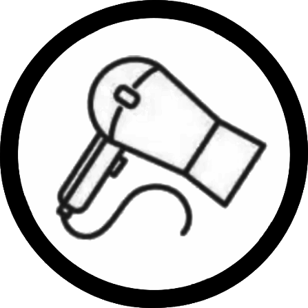
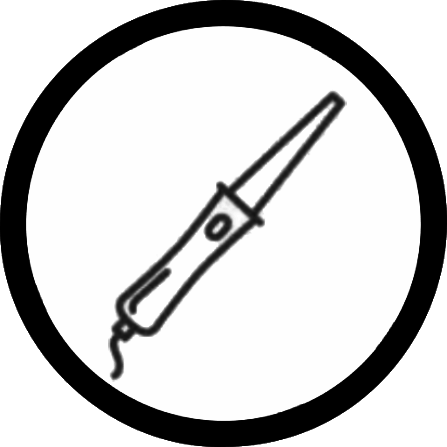
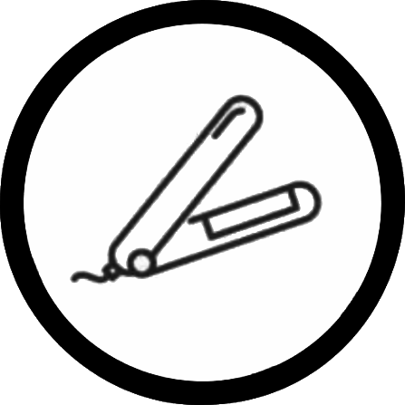

0/15
Please tell us your age.
It'll help us provide the best results.
1/15
Please choose one that describe you
2/15
What is your natural hair type?
Straight
Wavy
Curly
Coily
3/15
How would you describe your scalp condition?
4/15
Do you experience any scalp concerns?
Select all that apply
5/15
Have you dyed or highlighted your hair?
Select all that apply
6/15
Have you had any hair treatments such as keratin, protein, or Botox?
7/15
How often do you wash your hair?
8/15
Do you use any Sulfate-Free shampoos in your current wash routines?
9/15
How often do you use heat styling tools (hair dryer, flat iron)?



10/15
Which products are currently part of your hair care routine?
Select all that apply
11/15
What is your hair strand thickness?
12/15
What hair concerns do you currently have?
Select up to 3 options
13/15
What are your primary hair styling goals?
Only select your primary goal
14/15